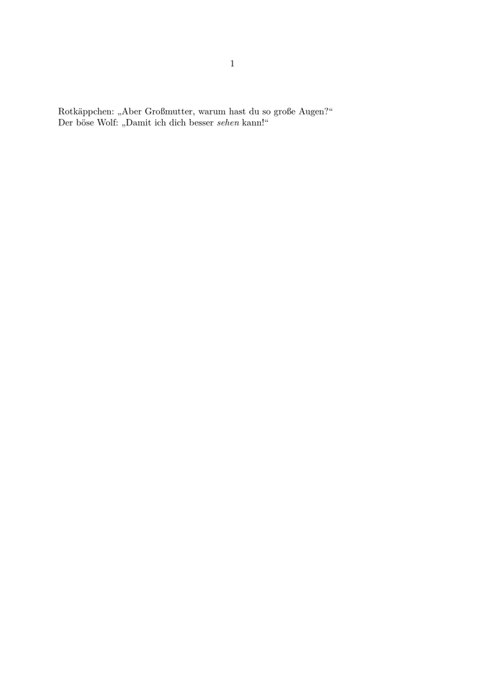

Here's a slightly more complex example:
-
\enableregime [utf-8] % choose input encoding % (in LuaTeX and XeTeX, UTF-8 is on by default, thus not needed) \mainlanguage [de] % language mode: changes typesetting rules, quote signs etc. \setupbodyfontenvironment[default][em=italic] % ConTeXt's default \em is slanted, but italic is better \starttext Rotkäppchen: \quotation{Aber Großmutter, warum hast du so große Augen?} Der böse Wolf: \quotation{Damit ich dich besser {\em sehen} kann!} \stoptext
looks like:
- 
- regime is the input encoding, i.e. what you type, so that you can use accented characters (like umlauts in the example) directly. Old encodings are supported, but use UTF-8 whenever possible. In XeTeX and LuaTeX that's the default already, so you don't need that line any more. (More on that topic in Encodings and Regimes - Old Content .)
- language is the language of your text. Besides \mainlanguage there's also \language to switch temporarily. Try your internet top level domain code as language code (de = german, fr = french, it = italian etc., see language tags ).
- quotation : use logical markup instead of specified signs! You get single quotes with \quote . You can use \startquotation ... \stopquotation for longer (indented) quotes.
- em : again, logical markup! say " \em phasized" instead of bold or italics. Remember, it's a switch, not a command! (Not \em{foo} , but {\em foo} .)